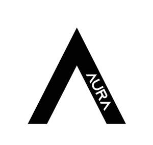
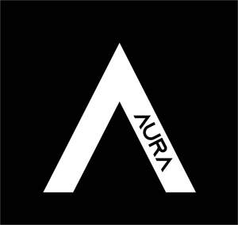

Trade Mark Journal No.2025/034 22 August 2025
UK00004239777 25 July 2025 (25)
Mark 1

Mark 2

- Class 25
- Clothing; Ready-to-wear clothing; Clothes; Maternity clothing; Jerseys [clothing]; Denims [clothing]; Shorts[clothing]; Leather clothing; Hoods [clothing]; Windproof clothing; Embroidered clothing; Wristbands[clothing]; Belts [clothing]; Belts for clothing; Waterproof clothing; Casual clothing; Jackets being sportsclothing; Jackets (Stuff -) [clothing]; Stuff jackets [clothing]; Bottoms [clothing]; Playsuits[clothing]; Clothing for leisure wear; Ready-made clothing; Trunks being clothing; Infant clothing; Leisureclothing; Clothing for sports; Sports clothing; Athletic clothing; Clothing for children; Muffs [clothing]; Bodies[clothing]; Clothing for babies; Tops [clothing]; Clothing for infants; Weatherproof clothing; Water-resistantclothing; Beach clothing; Thermal clothing; Mens clothing; Jeans; Denim jeans; Denim pants; Bluejeans; Leggings [trousers]; Trousers shorts; Denim jackets; Pants; Trousers; Corduroypants; Sweatpants; Chino pants; Corduroy trousers; Dress pants; Capri pants; Khakis; Turtleneckshirts; Coats of denim; Denim coats; Corduroy shirts; Leather pants; Casual trousers; Trousers ofleather; Snowboard trousers; Maternity pants; Slacks; Nappy pants [clothing]; Dress shirts; Babies pants [underwear]; Babies pants [clothing]; Stretch pants; Dungarees; Jogging pants; Boy shorts[underwear]; Trouser socks; Shorts; Camouflage pants; Yoga pants; Shirts; Waterproof pants; Golftrousers; Cargo pants; Sweat pants; Ski trousers; Mens dress socks; Trousers forsweating; Turtleneck sweaters; Short-sleeved shirts; Dress shoes; Ski pants; Maternity shorts; Longsleevedshirts; Jogging bottoms [clothing]; Waterproof trousers; Casual shirts; V-neck sweaters; Babypants; Cycling pants; Pants (Am.); Riding trousers; Collared shirts; Tracksuit bottoms; Lounge pants; Piratepants; Shoes for casual wear; Turtleneck tops; Mens and womens jackets, coats, trousers,vests; Open-necked shirts; Maternity leggings; Sports pants; Weatherproof pants; Sleeppants; Sweatshorts; Bib shorts; Overalls; Short trousers; Short-sleeved Tshirts; Short-sleeve shirts; Fleeceshorts; Pajama bottoms; Blouses; Shirts for suits; Button-front aloha shirts; Tank-tops; Warm-uppants; Mock turtleneck shirts; Maternity shirts; Horse-riding pants; Hunting pants; Culottes; Sneakers; Knitshirts; Gabardines [clothing]; Yoga shirts; Sweatshirts; Snow pants; Nurse pants; Underwear; Sleevelessjackets; Shirt yokes; Yokes (Shirt -); Tap pants; Leather dresses; Jackets [clothing]; Rain trousers; Gymshorts; Tracksuit tops; Mens underwear; Turtleneck pullovers; Pockets for clothing; Sweatshorts; Quilted jackets [clothing]; T-shirts; Polo shirts; Infants trousers; Shirts and slips; Camouflageshirts; Skirt suits; Ramie shirts; Bermuda shorts; Trousers for children; Breeches for wear; Sweaters; Sweatshirts; Culotte skirts; Leather shoes; Suede jackets; Tops; Tank tops; Halter tops; Crop tops; Baselayertops; Knitted tops; Hooded tops; Knit tops; Fleece tops; Vest tops; Chemise tops; Tube tops; Maternitytops; Jogging tops; Yoga tops; Baby tops; Warm-up tops; Cycling tops; Rugby tops; Polo knit tops; Tophats; Baselayer bottoms; Coats (Top -); Top coats; Sweat bottoms; Yoga bottoms; Jogging bottoms; Babybottoms; Skirts; Pleated skirts; Cardigans; Camisoles; Collars for dresses; Jumpers [sweaters]; Sleevedjackets; Roll necks [clothing]; Button down shirts; Shirt fronts; Straps for bras; Sundresses; Jockstraps[underwear]; Briefs [underwear]; Sweat-absorbent underclothing [underwear]; Trunks [underwear]; Sweatabsorbentunderwear; Underwear (Anti-sweat -); Anti-sweat underwear; Maternity underwear; Disposableunderwear; Knitted underwear; Undergarments; Underwear for women; Thermalunderwear; Underpants; Functional underwear; Underclothes; Womens underwear; Longunderwear; Gussets for underwear [parts of clothing]; Panties; Teddies [undergarments]; Ladies underwear; Lingerie; Slips [undergarments]; Knickers; Underpants for babies; Gstrings; Thongs; Underclothing; Maternity lingerie; Teddies [underclothing]; Thong sandals; Gloves[clothing]; Gloves as clothing; Pajamas; Undershirts; Underclothing (Anti-sweat -); Antisweatunderclothing; Corsets [underclothing]; Sweat-absorbent underclothing; Socks and stockings; Silkclothing; Bodices [lingerie]; Pyjamas; Braces for clothing [suspenders]; Latex clothing; Corsets [clothing,foundation garments]; Chaps (clothing); Bra straps [parts of clothing]; Antiperspirant socks; Drawers[clothing]; Drawers as clothing; Braces [suspenders] for clothing / Suspenders [braces] for clothing; Slips[underclothing]; Gussets for tights [parts of clothing]; Swimsuits; Hosiery; Bandeaux [clothing]; Beachclothes; Slips [clothing]; Nipple pasties being underclothing; Sweat-absorbent socks; Bed socks; Maillots[hosiery]; Bras; Woolen clothing; Aprons [clothing]; Pantyhose; Moisture-wicking sports pants; Mitts[clothing]; Womens undergarments; Nightwear; Swimwear; Negligees; Shapewear; Straplessbras; Strapless brassieres; Sleepwear; Bridal garters; Bikinis; Maternity sleepwear; Stockings; Gussets forstockings [parts of clothing]; Body stockings; Corsets [foundation clothing]; Corsets being foundationclothing; Underclothing for women; Nightgowns; Brastraps; Bralettes; Brassieres; Bustiers; Beachwear; Knitwear [clothing]; Peignoirs; Nighties; Fitted swimmingcostumes with bra cups; Plush clothing; Loungewear; Nursing bras; Maternity dresses; Stockings (Sweatabsorbent-); Sweat-absorbent stockings; Stockings [sweat-absorbent]; Boas [clothing]; Veils[clothing]; Cashmere clothing; Girdlescorsets]; Chemises; Clothing of leather; Leather (Clothing of -); Bridal gowns; Corsets; Dresses; Dance clothing; Linen clothing; Headbands [clothing]; Headbands forclothing; Bathing costumes for women; Sports bras; Pique shirts; Rugby shirts; Football shirts; Hoodedsweat shirts; Woven shirts; Aloha shirts; Soccer shirts; Golf shirts; Night shirts; Sport shirts; Sleevelessjerseys; Sleep shirts; Tennis shirts; Fishing shirts; Under shirts; Tee-shirts; Hunting shirts; Sports shirts with short sleeves; Sports shirts; Moisture-wicking sports shirts; Printed t-shirts; American football shirts; Biboveralls for hunting; Polo sweaters; Bib tights; Sleeveless pullovers; Padded shirts for athletic use; Rugbyshorts; Romper suits; Collars [clothing]; Mock turtleneck sweaters; Golf shorts; Short overcoat for kimono(haori); Bibs, sleeved, not of paper; Undershirts for kimonos (juban); Pyjamas [from tricot only]; Bibs, notof paper; Clothing for wear in wrestling games; Baby bibs [not of paper]; Golf clothing, other thangloves; Snap crotch shirts for infants and toddlers; Maternity wear; Casual wear; Bridesmaidswear; Formal wear; Ladies wear; Rain wear; Exercise wear; Evening wear; Sports wear; Ski wear; Dressesfor evening wear; Leisure wear; Head wear; Tennis wear; Surf wear; Childrens wear; Face masks[fashion wear]; Formal evening wear; Swim wear for children; Clothing for wear in judo practices; Paperhats for wear by nurses; Swim wear for gentlemen and ladies; Paper hats for wear by chefs; Dressshields; Shields (Dress -); Dress suits; Korean outer jackets worn over basic garment [Magoja]; Parts ofclothing, footwear and headgear; Party hats [clothing]; Fancy dress costumes; Braces for clothing; Capes(clothing); Leather belts [clothing]; Garments for protecting clothing; Fabric belts [clothing]; Visors[clothing]; Jogging outfits; Collar liners for protecting clothing collars; Kerchiefs [clothing]; Gussets forbathing suits [parts of clothing]; Camouflage gloves; Gloves for apparel; Tights; Leggings [legwarmers]; Footless tights; Woollen tights; Bodysuits; Athletic tights; Booties; Legwarmers; Skorts; Footlesssocks; Leotards; Yoga socks; Lace boots; Gymwear; Yoga shoes; Sandals; Anklets [socks]; Mens sandals; Pinafore dresses; Jumper dresses; Gussets for leotards [parts of clothing]; Bridesmaiddresses; Wedding dresses; Cocktail dresses; Costumes for use in childrens dress up play; Dressinggowns; Evening dresses; Shift dresses; Nurse dresses; Wedding gowns; Tennis dresses; Pleated skirts forformal kimonos (hakama); Womens ceremonial dresses; Gowns; Frock coats; Imitation leatherdresses; Sashes for wear; Christening gowns; Ladies dresses; Bathing costumes; Cheongsams(Chinese gowns); Evening gowns; Wedding garters; Skating outfits; Dresses made fromskins; Costumes; Sash bands for kimono (obi); Masquerade and halloween costumes; Masqueradecostumes; Costumes (Masquerade -); Halloween costumes; Dinner suits; Ballet suits; Nightgowns; Headgear for wear; Tennis skirts; Golf skirts; Underskirts; Trouser straps; Pantaloons; Blousonjackets; Miniskirts; Wind pants; Petticoats; Short petticoats; One-piece playsuits; Kneehighstockings; Trews; Jodhpurs; Waistcoats; Leather waistcoats; Waistcoats[vests]; Salopettes; Breeches; Knickerbockers; Leather jackets; Oilskins[clothing]; Overtrousers; Jackets; Camouflage jackets; Track pants; Shoes forleisurewear; Hoodies; Hooded sweatshirts; Hooded pullovers; Beanies; Fleece jackets; Tracksuits; Beaniehats; Fleece pullovers; Snowboard jackets; Balaclavas; Turtlenecks; Knitjackets; Pullovers; Parkas; Bandanas; Anoraks [parkas]; Sweat jackets; Jumpers [pullovers]; Fleecevests; Overshirts; Polar fleece jackets; Trenchcoats; Gilets; Hooded bathrobes; Scarves; Sheepskinjackets; Jumpsuits; Cowls [clothing]; Windcheaters; Casual jackets; Sweatsuits; Fur coats andjackets; Sports jackets; Bandanas [neckerchiefs]; Overcoats; Scarfs; Cashmere scarves; Stuff jackets; Furjackets; Bandannas; Hats; Windproof jackets; Bomber jackets; Blazers; Toques [hats]; Mufflers[clothing]; Jerseys; Wind-resistant jackets; Padded jackets; Weatherproofjackets; Windshirts; Handwarmers [clothing]; Outerwear; Rainproof jackets; Long sleeve pullovers; Knittedclothing; Mens socks; Jacket liners; Snowboard mittens; Crew neck sweaters; Wind-resistantvests; Waterproof jackets; Motorcycle jackets; Shell jackets; Reversible jackets; Ski jackets; Rainjackets; Riding jackets; Warm-up jackets; Dinner jackets; Wind jackets; Heavy jackets; Huntingjackets; Bed jackets; Smoking jackets; Light-reflecting jackets; Safari jackets; Down jackets; Trackjackets; Fishing jackets; Long jackets; Quilted vests; Wind resistant jackets; Rainproofclothing; Fishermens jackets; Duffle coats; Camouflage vests; Leather suits; Suits of leather; Duffelcoats; Leather coats; Motorcycle gloves; Waterproof boots; Fingerless gloves as clothing; Long sleevedvests; Fascinator hats; Bobble hats; Cloche hats; Bucket hats; Fur hats; Woolly hats; Baseball hats; Skihats; Fake fur hats; Baseball caps and hats; Ushankas [fur hats]; Rain hats; Fashion hats; Sun hats; Mitres[hats]; Miters [hats]; Hats (Paper -) [clothing]; Paper hats [clothing]; Beach hats; Sports caps andhats; Small hats; Sedge hats (suge-gasa); Chefs hats; Bonnets [headwear]; Caps [headwear]; Capsbeing headwear; Paper hats for use as clothing items; Fedoras; Knitted gloves; Clothing for horse-riding[other than riding hats]; Cap visors; Knitted caps; Headgear; Head scarves; Mittens; Headwear; Woollensocks; Sock suspenders; Leather headwear; Visors [hatmaking]; Visors [headwear]; Visors beingheadwear; Bucket caps; Valenki [feltedboots]; Head sweatbands; Bootees (woollen baby shoes); Furcloaks; Fishing headwear; Sun visors [headwear]; Skull caps; Gloves; Toe socks; Slipper socks; Face mask[clothing]; Sportswear; Menswear; Casualwear; Knitwear; Casualfootwear; Coveralls; Leisurewear; Rai nwear; Leisure footwear; Footwear; Work overalls; Leathergarments; Woven clothing; Sports garments; Coats; Fur coats; Trench coats; Tail coats; Sheepskincoats; Pea coats; Suit coats; Winter coats; Light-reflecting coats; Dust coats; Cotton coats; Housecoats; Rain coats; Heavy coats; Sport coats; Down coats; Laboratory coats; Wind coats; Morningcoats; Evening coats; Coats for men; White coats for hospital use; Coats made of cotton; Coats for women; Topcoats; Fur stoles; Stoles (Fur - ); Clothing made of fur; Synthetic fur stoles; Foulards [clothingarticles]; Articles of sports clothing; Japanese traditional clothing; Smart clothing; Clothing for martialarts; Articles of clothing; Footwear for women; Japanese style sandals of leather; Footwear forsports; Sports footwear; Kendo outfits; Clothing of imitations of leather; Leather (Clothing of imitations of -); Furs [clothing]; Clothes for sports; Footwear for sport; Footwear for use in sport; Japanese style clogsand sandals; Clothing for gymnastics; Clothing for cycling; Footwear for snowboarding; Clothes forsport; Articles of clothing made of leather; Boxer shorts; Swim shorts; Cycling shorts; Boxing shorts; Tennisshorts; Sliding shorts; Board shorts; Padded shorts for athletic use; American footballshorts; Boardshorts; Swim briefs; Boxer briefs; Sandals and beach shoes; Padded pants for athleticuse; Shoes; Sneakers [footwear]; High-heeled shoes; Slip-on shoes; Rubber shoes; Snowboardshoes; Hidden heel shoes; Ballet shoes; Tennis shoes; Athletic shoes; Platform shoes; Basketballshoes; Wooden shoes; Roller shoes; Sport shoes; Waterproof shoes; Sports shoes; Soccer shoes; Hockeyshoes; Running shoes; Canvas shoes; Jogging shoes; Hiking shoes; Walking shoes; Handballshoes; Dance shoes; Esparto shoes or sandals; Mountaineering shoes; Baseball shoes; Golf shoes; Flipflopsfor use as footwear; Riding shoes; Trainers [footwear]; Bowling shoes; Ankle boots; Heels; Wedgesneakers; Pumps [footwear]; Flat shoes; Footwear [excluding orthopedic footwear]; Athleticfootwear; Footwear for men; Athletics footwear; Climbing footwear; Golf footwear; Fishing footwear; Beachfootwear; Childrens footwear; Infants footwear; Footwear not for sports; Ladies footwear; Apres-ski shoes; Leisure shoes; Footwear for men and women; Footwear made ofvinyl; Athletics shoes; Cycling shoes; Skiing shoes; Gymnastic shoes; Boots for sports; Rugbyshoes; Boots; Wellington boots; Snowboard boots; Snow boots; Hiking boots; Climbing boots[mountaineering boots]; Trekking boots; Winter boots; Mountaineering boots; Ski boots; Boots (Ski -); Rainboots; Walking boots; Riding boots; Hunting boots; Polo boots; Soccer boots; Horse-riding boots; Climbingboots; Rugby boots; Army boots; Desert boots; Football boots; Aprs-ski boots; Work boots; Militaryboots; Boots for sport; Boots for motorcycling; Gym boots; Fishing boots; Motorcyclist boots; Babyboots; Rubber fishing boots; Waterproof boots for fishing; Ladies boots; After ski boots; Russianfelted boots (Valenki); Infants boots; Sports [Boots for -]; Rain shoes; Leather slippers; Ski bootbags; Spiked running shoes; Hunting boot bags; Work shoes; Industrial clothing; Luxury clothing; Streetwear; Workwear.
PURE AURA LTD